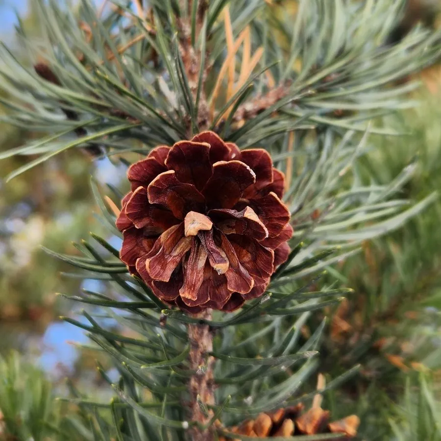

乔木 · 植物界
欧洲赤松 Pinus sylvestris

广泛分布于欧亚大陆北部的松树，树皮上部橙红、下部灰褐，耐寒耐旱，是欧洲森林与北方造林的重要树种。
- 分类
- 门裸子植物门纲松柏纲目松柏目科松科属松属
- 栖息环境
- 从西欧到西伯利亚的北方针叶林与沙地，喜光极耐寒，耐干旱瘠薄
- 地理分布
- 欧亚大陆北部广泛分布；中国东北大兴安岭、呼伦贝尔沙地有樟子松天然林
- 保护级别
- IUCN 无危（LC）；中国未列入国家重点保护野生植物名录
物种志
欧洲赤松为常绿针叶乔木，高可达 30 m，树干通直；树皮上部橙红色、薄而呈鳞片状剥落，下部灰褐色、厚而纵裂，这是它最醒目的特征；针叶 2 针一束，长 4–7 cm，蓝绿色，稍扭转。雌雄同株，雄球花黄色、聚生新枝基部，雌球花紫红色、生于枝顶；球果卵形，长 3–6 cm，成熟时红褐色。
欧洲赤松是欧亚大陆分布最广的松树之一，从西欧、北欧一直延伸到俄罗斯西伯利亚，中国东北大兴安岭与呼伦贝尔沙地有樟子松（变种）天然分布。它喜光、极耐寒，可耐 −50 ℃ 低温，耐干旱瘠薄，是北方针叶林与沙地造林的主要树种。木材可供建筑、电杆与纸浆用，树皮可提取栲胶，松脂可提炼松香；树姿挺拔，也是北方园林中的观赏树种。
形态与习性
- 株高可达 30 m，树干通直
- 树皮上部橙红色鳞片状，下部灰褐色纵裂
- 花期5–6 月，雄球花黄色
- 球果成熟翌年秋季，长 3–6 cm
- 光照强阳性，不耐庇荫
- 水分耐旱，可生于瘠薄沙地
- 主要用途建筑与电杆用材、纸浆、树皮提取栲胶
趣味知识
- 欧洲赤松树干上部的树皮呈橙红色、薄片状剥落，是辨认它的重要特征。
- 欧洲赤松可耐 −50 ℃ 的严寒，是分布最北的松树之一。
- 中国东北的樟子松是欧洲赤松的变种，常用于沙地防风固沙造林。
- 欧洲赤松的针叶蓝绿色、两针一束，比马尾松的针叶短得多。